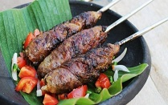
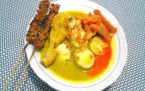

Menu Pilihan
-
 Pecak lele di Indonesia adalah nama sebuah makanan khas Jawa yang terdiri dari ikan lele dan sambal pecak.
Pecak lele di Indonesia adalah nama sebuah makanan khas Jawa yang terdiri dari ikan lele dan sambal pecak.
-

Trancam
Trancam adalah makanan khas Jawa Tengah yang mirip dengan urap, terdiri dari tauge, kacang panjang, daun kemangi dan irisan halus sawi putih.
-

Sate buntel, adalah sejenis sate yang dibuat dari daging kambing cincang yang dibungkus dengan lemak kambing lalu dibakar
-

Irisan lontong yang disiram dengan kuah opor ditaburi dengan irisan ayam, krecek, dan telur rebus serta disajikan dengan kerupuk udang